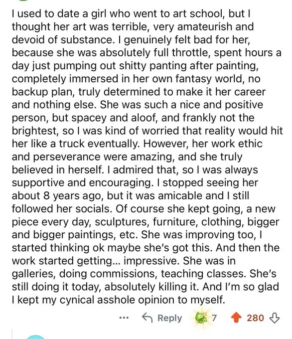

예전에 미대 다니는 여자친구를 사귄 적이 있었는데, 내 눈엔 걔 작품이 진짜 형편없어 보였음. 너무 아마추어 같고 알맹이도 없었거든. 진심으로 안쓰러울 지경이었음.
그 친구는 매일 몇 시간씩 쓰레기 같은 그림들을 쏟아내고 있었으니까. 자기만의 환상에 푹 빠져서 플랜 B도 없이, 오직 이것만 평생 직업으로 삼겠다고 단단히 벼르고 있었음. 참 착하고 긍정적인 애였는데, 멍하고 붕 떠 있는 데다 솔직히 머리가 썩 좋은 편도 아니었어서 결국 현실이라는 트럭에 치이지 않을까 걱정스럽기도 했음.
하지만 직업의식이랑 끈기 하나는 대단했고, 스스로를 진심으로 믿고 있었음. 그 점은 리스펙했기 때문에 난 항상 지지해 주고 응원해 줬음. 8년 전쯤 헤어졌지만 좋게 끝났고, 그 뒤로도 SNS는 계속 팔로우하고 있었음. 당연하게도 걔는 멈추지 않았음.
매일 새로운 작품을 냈고, 조각, 가구, 옷, 점점 더 큰 그림들까지 영역을 넓혀갔음. 실력도 점점 늘더라. 난 '어쩌면 해낼지도 모르겠다' 싶었음. 그러다 어느 순간부터 작품들이… 진짜 인상 깊어지기 시작했음. 갤러리 전시도 하고, 외주 커미션 받고, 강의도 나가더라고.
지금도 여전히 그 일 하고 있고, 말 그대로 대성공을 거둠. 내 그 냉소적이고 꼬인 생각을 혼자만 삼키고 입 밖으로 안 내서 진짜 천만다행이라고 생각함.
그래서 누군데